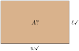
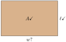
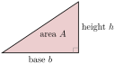
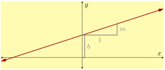
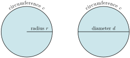
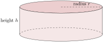

Section 2.5 Isolating a Linear Variable
In this section, we solve for a variable in a linear equation even when there are other variables present. The process is not really new, but there is a little more abstraction as we track those other variables through each step.
Subsection 2.5.1 Solving for a Variable
The formula of calculating a rectangle’s area is \(A=\ell w\text{,}\) where \(\ell\) stands for the rectangle’s length and \(w\) stands for its width. When a rectangle’s length and width are given, this formula lets us calculate the rectangle’s area.

What if we know a rectangle’s area and length, but we need to calculate its width?

Well, if a rectangle’s area is 12 m2, and its length is 4 m, we could substitute these values into the area formula and then we have only one variable left, \(w\text{,}\) and we can solve for it:
\begin{align*}
\substitute{12}\amp=\substitute{4}w\\
\divideunder{12}{4}\amp=\divideunder{4w}{4}\\
3\amp=w\implies w=3
\end{align*}
We can go through the same steps without using specific numbers for \(A\) and \(\ell\text{:}\)
\begin{align*}
\substitute{A}\amp=\substitute{\ell}w\\
\divideunder{A}{\ell}\amp=\divideunder{\ell w}{\ell}\\
\frac{A}{\ell}\amp=w\implies w =\frac{A}{\ell}
\end{align*}
Now we have an equation where \(w\) is islated. For example if we want to find the width when \(A=12\) and \(\ell=4\text{,}\) we have a formula: \(w=\frac{A}{\ell}=\frac{12}{4}=3\text{.}\) This formula can be used again: what if \(A=100\) and \(\ell=20\text{?}\) Or if \(A=23.47\) and \(\ell=2.71\text{?}\) This formula, \(w=\frac{A}{\ell}\text{,}\) is a handy alternative to the original formula \(A=\ell w\) for situations where \(w\) is the unknown value.
Note that when solving for \(A\text{,}\) we divided each side of the equation by \(\ell\text{.}\) Why exactly? We were trying to isolate \(w\text{,}\) and \(w\) was being multiplied by \(A\text{.}\) It’s key to understand that we applied the opposite action (dividing by \(A\)) to what was happening to our target variable (it was being multiplied by \(A\)). We will think in terms of “un-doing” actions as we continue.
Example 2.5.2.
Solve for \(R\) in \(P=R-C\text{.}\) (This is the relationship in economics between profit, revenue, and cost.)
To solve for \(R\text{,}\) we notice what is happening to \(R\) in this equation: \(C\) is subtracted from \(R\text{.}\) To undo this, we add \(C\) to each side. As we track our steps below, we’ll emphasize which variable it is that we are trying to isolate. With more than one variable here, it can be easy to lose track of which one you are trying to solve for.
\begin{align*}
P\amp=\attention{R}-C\\
P\addright{C}\amp=\attention{R}-C\addright{C}\\
P+C\amp=\attention{R}\amp\implies R=P+C
\end{align*}
In other words, revenue is the sum of profit and cost.
Example 2.5.3.
Solve for \(x\) in \(y=mx+b\text{.}\) (This is a line’s equation in slope-intercept form, which we study thoroughly in Section 3.5.)
Explanation.
In the equation \(y=mx+b\text{,}\) we see that \(x\) is multiplied by \(m\) and then \(b\) is added to that. Think of \(x\) as a birthday present, enclosed in a box, and then placed in a gift bag. To get your gift, you need to “undo” those containers in the opposite order: take it out of the bag, then open the box. We need to undo multiplying by \(m\) and adding \(b\) in the opposite order. So we will start by subtracting \(b\text{:}\)
\begin{align*}
y\amp=m\attention{x}+b\\
y\subtractright{b}\amp=m\attention{x}+b\subtractright{b}\\
y-b\amp=m\attention{x}
\end{align*}
And then dividing by \(m\text{:}\)
\begin{align*}
\divideunder{y-b}{m}\amp=\divideunder{m\attention{x}}{m}\\
\frac{y-b}{m}\amp=\attention{x}\amp\implies x\amp=\frac{y-b}{m}
\end{align*}
Warning 2.5.4.
In Example 3, each side was divided by \(m\text{.}\) It’s not uncommon for students to have \(y-b=mx\) and write something like \(\frac{y}{m}-b=\frac{mx}{m}\text{,}\) but this is incorrect. If you are going to divide by something as a step in the process, you will need to divide the two sides of the equation.
Example 2.5.5.
Solve for \(b\) in \(A=\frac{1}{2}bh\text{.}\) (This is the area formula for a triangle.)
Explanation.
As we studied in Section 3, when an equation has fractions, a helpful first step is to clear denominators. So here we will multiply by \(2\) on each side.
\begin{align*}
\multiplyleft{2}A\amp=\multiplyleft{2}\frac{1}{2}\attention{b}h\\
2A\amp=\attention{b}h
\end{align*}
Now our target variable is being multiplied by \(h\text{,}\) so we apply the opposite action, dividing by \(h\text{:}\)
\begin{align*}
\divideunder{2A}{h}\amp=\divideunder{\attention{b}h}{h}\\
\frac{2A}{h}\amp=\attention{b}\amp\implies b\amp=\frac{2A}{h}
\end{align*}
Checkpoint 2.5.6.
Solve for \(y\) in \(2x+5y=10\text{.}\) (This is a linear equation in standard form, studied more in Section 3.7.)
Explanation.
To solve for \(y\text{,}\) we first isolate \(5y\) by subtracting \(2x\) from each side of the equation. After that, we can divide each side by \(5\) to finish solving for \(y\text{:}\)
\begin{equation*}
\begin{aligned}
2x+5\attention{y}\amp=10\\
2x+5\attention{y}\subtractright{2x}\amp=10\subtractright{2x}\\
5\attention{y}\amp=10-2x\\
\divideunder{5\attention{y}}{5}\amp=\divideunder{10-2x}{5}\\
y\amp=\frac{10-2x}{5}
\end{aligned}
\end{equation*}
Example 2.5.7.
Solve for \(F\) in \(C=\frac{5}{9}(F-32)\text{.}\) (This represents the relationship between temperature in degrees Celsius and degrees Fahrenheit.)
Explanation.
There is more than one way to do this, but we will follow the guidance that we’ve already developed in this textbook. Our first step will be to clear the denominator:
\begin{align*}
C\amp=\frac{5}{9}(\attention{F}-32)\\
\multiplyleft{9}C\amp=\multiplyleft{9}\frac{5}{9}(\attention{F}-32)\\
9C\amp=5(\attention{F}-32)
\end{align*}
Now what is happening to our target variable \(F\text{?}\) It has \(32\) subtracted from it, and then that result is multiplied by \(5\text{.}\) So we will do the opposite actions in the opposite order: divide by \(5\) and then add \(32\text{.}\)
\begin{align*}
\divideunder{9C}{5}\amp=\divideunder{5(\attention{F}-32)}{5}\\
\frac{9C}{5}\amp=\attention{F}-32\\
\frac{9C}{5}\addright{32}\amp=\attention{F}-32\addright{32}\\
\frac{9C}{5}+32\amp=\attention{F}\amp\implies F\amp=\frac{9}{5}C+32
\end{align*}
Reading Questions 2.5.2 Reading Questions
1.
Suppose you want to solve the equation \(mq+b=T\) for \(q\text{.}\) What would be wrong with dividing on each side by \(m\) to get \(\frac{mq}{m}+b=\frac{T}{m}\text{?}\)
2.
How do you undo dividing something by \(R\text{?}\)
3.
What is one reason why we might take a formula like \(P=IV\) and find it useful to solve for \(I\) and write \(I=\frac{P}{V}\text{?}\)
Exercises 2.5.3 Exercises
Skills Practice
Solving for a Variable Comparisons.
Solve the equation for the indicated variable.
1.
(a)
\({k+4}={1}\) for \(k\text{.}\)
Answer.
\(\left\{-3\right\}\)
(b)
\({k+y}={c}\) for \(k\text{.}\)
Answer.
\(k = c-y\)
2.
(a)
\({q+2}={1}\) for \(q\text{.}\)
Answer.
\(\left\{-1\right\}\)
(b)
\({q+g}={z}\) for \(q\text{.}\)
Answer.
\(q = z-g\)
3.
(a)
\({v-8}={1}\) for \(v\text{.}\)
Answer.
\(\left\{9\right\}\)
(b)
\({v-N}={T}\) for \(v\text{.}\)
Answer.
\(v = T+N\)
4.
(a)
\({B-6}={1}\) for \(B\text{.}\)
Answer.
\(\left\{7\right\}\)
(b)
\({B-v}={p}\) for \(B\text{.}\)
Answer.
\(B = p+v\)
5.
(a)
\({4G}={2}\) for \(G\text{.}\)
Answer.
\(\left\{\frac{1}{2}\right\}\)
(b)
\({eG}={K}\) for \(G\text{.}\)
Answer.
\(G = \frac{K}{e}\)
6.
(a)
\({2M}={3}\) for \(M\text{.}\)
Answer.
\(\left\{\frac{3}{2}\right\}\)
(b)
\({KM}={g}\) for \(M\text{.}\)
Answer.
\(M = \frac{g}{K}\)
7.
(a)
\({\frac{S}{7}}={2}\) for \(S\text{.}\)
Answer.
\(\left\{14\right\}\)
(b)
\({\frac{S}{t}}={C}\) for \(S\text{.}\)
Answer.
\(S = Ct\)
8.
(a)
\({\frac{Z}{5}}={2}\) for \(Z\text{.}\)
Answer.
\(\left\{10\right\}\)
(b)
\({\frac{Z}{c}}={X}\) for \(Z\text{.}\)
Answer.
\(Z = Xc\)
9.
(a)
\({9e+7}={5}\) for \(e\text{.}\)
Answer.
\(\left\{\frac{-2}{9}\right\}\)
(b)
\({Je+u}={j}\) for \(e\text{.}\)
Answer.
\(e = \frac{j-u}{J}\)
10.
(a)
\({9j+4}={7}\) for \(j\text{.}\)
Answer.
\(\left\{\frac{1}{3}\right\}\)
(b)
\({sj+P}={V}\) for \(j\text{.}\)
Answer.
\(j = \frac{V-P}{s}\)
Isolate the Variable.
Isolate the indicated variable.
11.
\(q\) in \({q+a}={l}\)
Answer.
\(q = l-a\)
12.
\(v\) in \({v+H}={G}\)
Answer.
\(v = G-H\)
13.
\(B\) in \({pB+c}={e}\)
Answer.
\(B = \frac{e-c}{p}\)
14.
\(G\) in \({XG+x}={N}\)
Answer.
\(G = \frac{N-x}{X}\)
15.
\(x\) in \({y}={Fx+V}\)
Answer.
\(x = \frac{y-V}{F}\)
16.
\(x\) in \({y}={lx+p}\)
Answer.
\(x = \frac{y-p}{l}\)
17.
\(Y\) in \({\frac{Y}{V}+J}={X}\)
Answer.
\(Y = V\mathopen{}\left(X-J\right)\)
18.
\(e\) in \({\frac{e}{E}+h}={K}\)
Answer.
\(e = E\mathopen{}\left(K-h\right)\)
Applications
Triangle Area.
The area of a triangle is given by \(A=\frac12bh\text{,}\) where \(b\) is the base width, and \(h\) is the height.

19.
Solve the equation \(A=\frac12bh\) for \(b\text{.}\)
Answer.
\(b = \frac{2A}{h}\)
20.
Solve the equation \(A=\frac12bh\) for \(h\text{.}\)
Answer.
\(h = \frac{2A}{b}\)
Slope-Intercept Form.
The equation for a line in “slope-intercept form” is \(y=mx+b\text{.}\)

21.
Solve the equation for \(m\text{.}\)
Answer.
\(m = \frac{y-b}{x}\)
22.
Solve the equation for \(b\text{.}\)
Answer.
\(b = y-mx\)
Circle Circumference.
The circumference of a circle can be found with the equation \(c=2\pi r\text{,}\) where \(r\) is the radius, or with the equation \(c=\pi d\text{,}\) where \(d\) is the diameter.

23.
Solve the equation \(c=2\pi r\) for \(r\text{.}\)
Answer.
\(r = \frac{c}{2\pi }\)
24.
Solve the equation \(c=\pi d\) for \(d\text{.}\)
Answer.
\(d = \frac{c}{\pi }\)
Cylinders.
The volume of a cylinder can be found with the equation \(V=\pi r^2h\text{,}\) where \(r\) is the radius and \(h\) is the height. Its surface area can be found with the equation \(A=2\pi r^2+2\pi rh\text{.}\)

25.
Solve \({V}={\pi r^{2}h}\) for \(h\text{.}\)
Answer.
\(h = \frac{V}{\pi r^{2}}\)
26.
Solve \({A}={2\pi r^{2}+2\pi rh}\) for \(h\text{.}\)
Answer.
\(h = \frac{A-2\pi r^{2}}{2\pi r}\)
Standard Form Linear Equations.
Isolate \(y\) in the standard form linear equation (a topic covered later in this book).
27.
\({-16x-2y}={24}\)
Answer.
\(y = -8x-12\)
Explanation.
\begin{equation*}
\begin{aligned}
{-16x-2y} \amp = {24}\\
{-16x-2y+16x} \amp = {24+16x}\\
{-2y} \amp = {24+16x}\\
{\frac{-2y}{-2}} \amp = {\frac{24+16x}{-2}}\\
{y} \amp = {-8x-12}
\end{aligned}
\end{equation*}
28.
\({8x-2y}={-32}\)
Answer.
\(y = 4x+16\)
Explanation.
\begin{equation*}
\begin{aligned}
{8x-2y} \amp = {-32}\\
{8x-2y-8x} \amp = {-32-8x}\\
{-2y} \amp = {-32-8x}\\
{\frac{-2y}{-2}} \amp = {\frac{-32-8x}{-2}}\\
{y} \amp = {4x+16}
\end{aligned}
\end{equation*}
29.
\({7x+4y}={36}\)
Answer.
\(y = -{\frac{7}{4}}x+9\)
Explanation.
\begin{equation*}
\begin{aligned}
{7x+4y} \amp = {36}\\
{7x+4y-7x} \amp = {36-7x}\\
{4y} \amp = {36-7x}\\
{\frac{4y}{4}} \amp = {\frac{36-7x}{4}}\\
{y} \amp = {-{\frac{7}{4}}x+9}
\end{aligned}
\end{equation*}
30.
\({-3x-5y}={-45}\)
Answer.
\(y = -{\frac{3}{5}}x+9\)
Explanation.
\begin{equation*}
\begin{aligned}
{-3x-5y} \amp = {-45}\\
{-3x-5y+3x} \amp = {-45+3x}\\
{-5y} \amp = {-45+3x}\\
{\frac{-5y}{-5}} \amp = {\frac{-45+3x}{-5}}\\
{y} \amp = {-{\frac{3}{5}}x+9}
\end{aligned}
\end{equation*}
31.
\({-6x-6y}={8}\)
Answer.
\(y = -x+-{\frac{4}{3}}\)
Explanation.
\begin{equation*}
\begin{aligned}
{-6x-6y} \amp = {8}\\
{-6x-6y+6x} \amp = {8+6x}\\
{-6y} \amp = {8+6x}\\
{\frac{-6y}{-6}} \amp = {\frac{8+6x}{-6}}\\
{y} \amp = {-x - {\frac{4}{3}}}
\end{aligned}
\end{equation*}
32.
\({9x+7y}={8}\)
Answer.
\(y = -{\frac{9}{7}}x+{\frac{8}{7}}\)
Explanation.
\begin{equation*}
\begin{aligned}
{9x+7y} \amp = {8}\\
{9x+7y-9x} \amp = {8-9x}\\
{7y} \amp = {8-9x}\\
{\frac{7y}{7}} \amp = {\frac{8-9x}{7}}\\
{y} \amp = {-{\frac{9}{7}}x+{\frac{8}{7}}}
\end{aligned}
\end{equation*}
33.
\({48x-73y}={187}\)
Answer.
\(y = {\frac{48}{73}}x+-{\frac{187}{73}}\)
Explanation.
\begin{equation*}
\begin{aligned}
{48x-73y} \amp = {187}\\
{48x-73y-48x} \amp = {187-48x}\\
{-73y} \amp = {187-48x}\\
{\frac{-73y}{-73}} \amp = {\frac{187-48x}{-73}}\\
{y} \amp = {{\frac{48}{73}}x - {\frac{187}{73}}}
\end{aligned}
\end{equation*}
34.
\({-77x-81y}={174}\)
Answer.
\(y = -{\frac{77}{81}}x+-{\frac{58}{27}}\)
Explanation.
\begin{equation*}
\begin{aligned}
{-77x-81y} \amp = {174}\\
{-77x-81y+77x} \amp = {174+77x}\\
{-81y} \amp = {174+77x}\\
{\frac{-81y}{-81}} \amp = {\frac{174+77x}{-81}}\\
{y} \amp = {-{\frac{77}{81}}x - {\frac{58}{27}}}
\end{aligned}
\end{equation*}